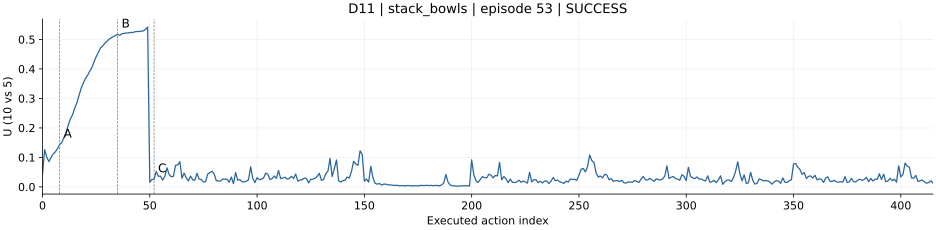
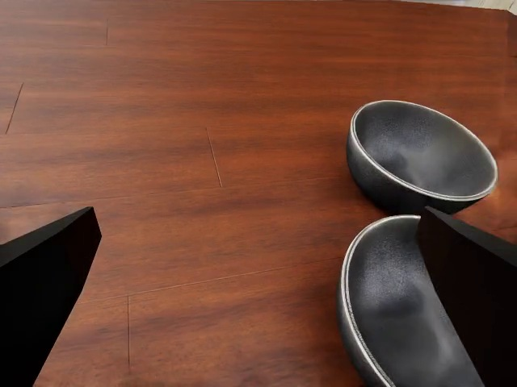
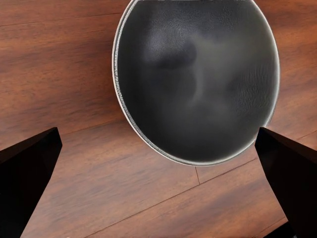
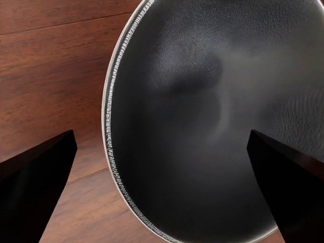
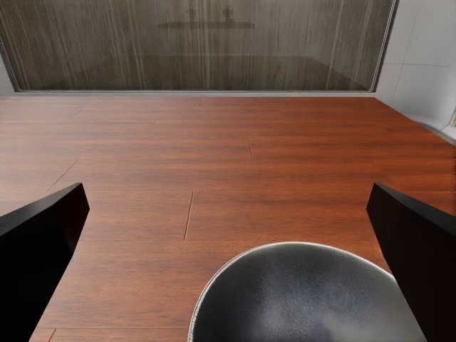
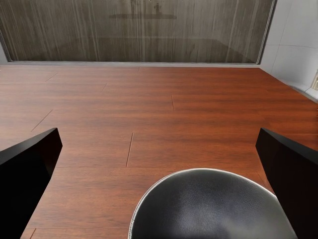
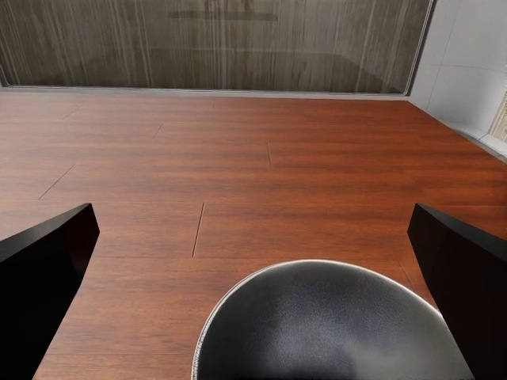

D11 · stack_bowls
成功轨迹 · episode 53 · layout seed 2/17 · repeat 0 · 416动作

同一时刻的左右腕部画面
cam_left_wrist

A · action 8
B · action 35
C · action 52cam_right_wrist

A · action 8
B · action 35
C · action 52完整主相机视频、数据与SVG
点击A/B/C定位。按原生action → query/h → control tick → 实际视频帧匹配；曲线完整、无平滑，不画未执行的预测尾部。
逐动作U · 三相机帧映射 · SVG原生完整视频：主相机 · 左腕 · 右腕